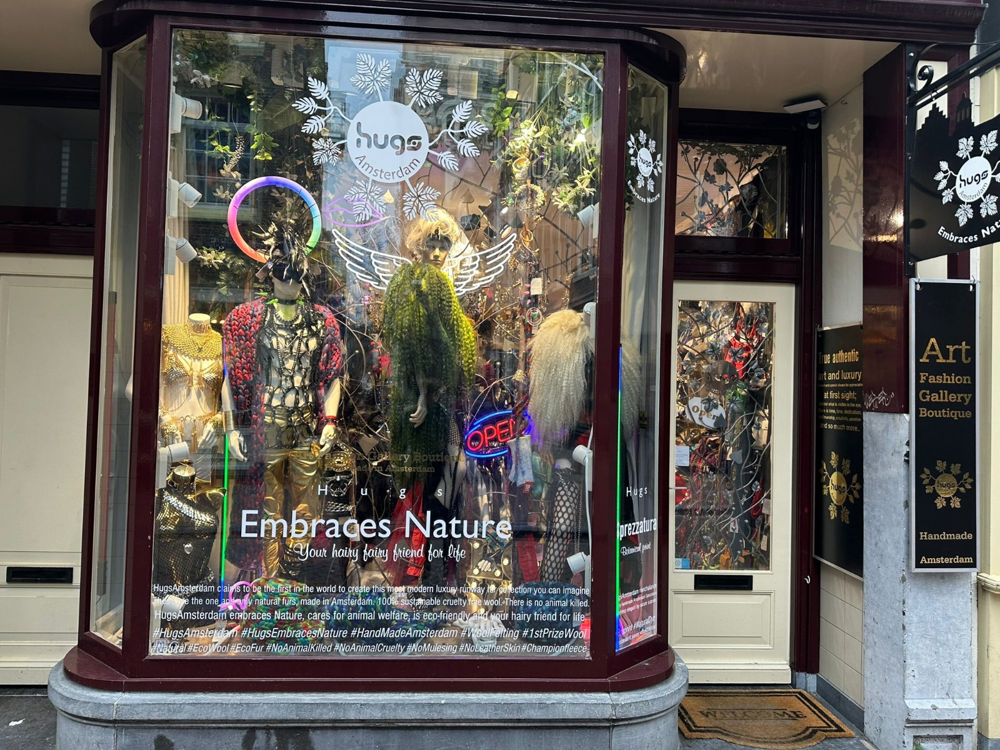

Hugs.Amsterdam
Hugs is een winkel in Amsterdam opgezet door ontwerper en winkeligenaar Desiree. Hugs amsterdam heeft een groot arsortiment aan alternatieve kleding maar wat deze winkel erg bijzonder maakt is dat alle producten die in de winkel verkocht worden met de hand gemaakt. Niet alleen door de eigenarese maar ook door ontwerpers die met liefde uitworden gekozen door Desiree. De winkel geeft een vrijheid aan mensen die binnenkomen niks is te gek in deze Winkel van brillen naar kettingen en outfits. Hugs is gebaseerd in Amsterdam aan Nieuwe Hoogstraat dichtbij.